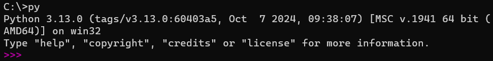

Python のインストール
64-bit 版 windows 用インストーラをダウンロードして実行します。
Tip
最新ではないバージョンの Python をダウンロードする場合は、以下のスクリーンショットを参照して、環境に適したインストーラーをダウンロードしてください。


このスクリーンショットは、64 ビット Windows 用の Python 3.11.7 インストーラーへのリンクの場所の例を示しています。

インストーラ画面
Python がインストールできているか確認する
インストールを後から確認したい場合は、以下の手順に従ってください。
Windows キーを押してコマンドプロンプトを開きます。

「py」と入力して Enter キーを押してください。
Python が起動すればセットアップは成功です。 (もし 「”py” は内部コマンドまたは外部コマンド、操作可能なプログラムまたはバッチ ファイルとして認識されていません。」というメッセージが表示される場合、Python がインストールされていない可能性があります。)
